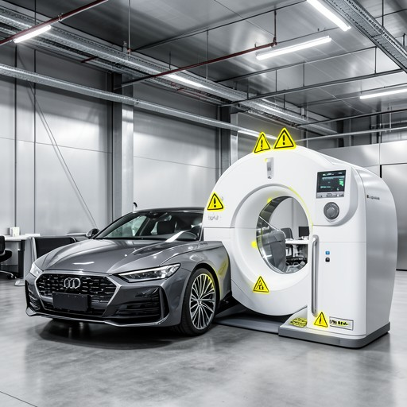
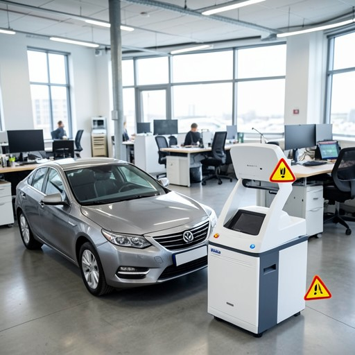

系统A

工具链：ImageGeneration -> Grounding -> ImageEdit
创建一张真实工业摄影风格的办公室工作空间图，包含一辆汽车和一台医疗扫描仪。目标是强调汽车与医疗扫描仪之间的功能关系：把两者放在画面下方区域，使一个物体部分遮挡另一个物体；也可以在物体附近添加警示图标来强调它们的交互。最终图应清楚表现这两个元素在工作空间中的功能联系。
工具链：ImageGeneration -> Grounding -> ImageEdit

工具链：ImageGeneration -> ImageEdit

工具链：ImageGeneration
对系统A、系统B、系统C分别填写：
结果是否一致：0-10 分；过程是否合理：0-10 分；0=完全不符合/完全不合理，10=完全符合/非常合理。另填写问题类型与备注。